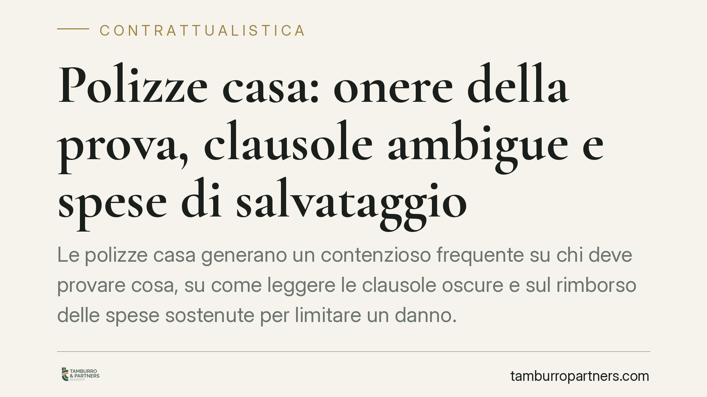

Polizze casa: onere della prova, clausole ambigue e spese di salvataggio
Le polizze casa generano un contenzioso frequente su chi deve provare cosa, su come leggere le clausole oscure e sul rimborso delle spese sostenute per limitare un danno. I principi utili non nascono da un organismo nuovo, ma dal codice civile e dagli orientamenti consolidati. Vediamo i riferimenti applicabili, con un focus sui profili condominiali della polizza globale fabbricati.

Il quadro: regole esistenti, non novità da verificare
Sul fronte della risoluzione stragiudiziale delle controversie assicurative è in corso, a livello normativo, un percorso di rafforzamento degli strumenti ADR (sistemi alternativi di risoluzione delle liti). Allo stato, tuttavia, non risulta pubblicato un corpus di decisioni di un organismo analogo all'Arbitro Bancario Finanziario con orientamenti consolidati e citabili. Per questa ragione trattiamo i principi che davvero governano le polizze casa: quelli del codice civile, già applicati dalla giurisprudenza.
Chi intenda avvalersi di eventuali strumenti ADR assicurativi, una volta pienamente operativi, dovrà fare riferimento alle fonti ufficiali IVASS per denominazione, competenze e termini. Finché tali dati non sono confermati da fonte ufficiale, è prudente non assumerli come certi.
Onere della prova: chi deve dimostrare cosa (art. 2697 c.c.)
L'art. 2697 c.c. stabilisce che chi vuol far valere un diritto in giudizio deve provare i fatti che ne costituiscono il fondamento; chi eccepisce l'inefficacia di tali fatti deve provare i fatti su cui l'eccezione si fonda.
Applicato alle polizze casa, il principio si traduce così: l'assicurato deve provare l'esistenza del contratto e il verificarsi del sinistro rientrante nella garanzia. La compagnia, invece, che voglia negare o ridurre l'indennizzo invocando una clausola di esclusione o di decadenza, deve provare i presupposti di quell'eccezione. È una ripartizione che pesa in modo concreto: documentare bene il sinistro è l'onere dell'assicurato, mentre l'operatività di un'esclusione grava sull'assicuratore.
Clausole ambigue: interpretazione contro chi le ha scritte (art. 1370 c.c.)
Le polizze sono tipicamente contratti per adesione: moduli predisposti dalla compagnia, che l'assicurato sottoscrive senza negoziare il testo. In questi casi vale l'art. 1370 c.c., secondo cui le clausole inserite nelle condizioni generali di contratto o in moduli predisposti da uno dei contraenti si interpretano, nel dubbio, a favore dell'altro.
In pratica: se una clausola di copertura o di esclusione è oggettivamente ambigua, l'incertezza non può risolversi a vantaggio di chi quella clausola ha redatto. È uno strumento interpretativo prezioso di fronte a formulazioni oscure sulle cause escluse o sui limiti di garanzia.
Spese di salvataggio: il rimborso ex art. 1914 c.c.
L'art. 1914 c.c. impone all'assicurato di fare quanto gli è possibile per evitare o diminuire il danno. Le spese sostenute a questo scopo — le cosiddette spese di salvataggio — sono a carico dell'assicuratore, in proporzione del valore assicurato rispetto a quello che la cosa aveva nel momento del sinistro.
Il punto rilevante, spesso frainteso: queste spese sono rimborsabili anche se, sommate all'indennizzo, superano il massimale, purché siano state sostenute ragionevolmente allo scopo di contenere il danno e nei limiti previsti dalla norma. Non sono dunque automaticamente assorbite dal tetto di polizza. L'assicuratore risponde invece nei limiti del valore assicurato quando gli atti dell'assicurato risultino avventati.
Il profilo condominiale: la polizza globale fabbricati
Molti condomìni stipulano una polizza globale fabbricati, a copertura delle parti comuni. Qui si pone un tema di legittimazione: il singolo condòmino può agire direttamente verso la compagnia per un danno che lo riguarda?
La risposta dipende da chi è parte del contratto e da chi ha subìto il pregiudizio. La polizza è generalmente stipulata dal condominio, rappresentato dall'amministratore, che è il contraente. Il singolo condòmino può vantare pretese risarcitorie proprie quando il danno colpisce la sua unità o beni individuali, ma il coordinamento con l'amministratore resta indispensabile per attivare correttamente la copertura ed evitare contestazioni sulla titolarità.
Cosa fare in concreto
- Documenta il sinistro in modo completo: foto datate, verbali, perizie, comunicazioni tempestive alla compagnia. L'onere di provare il fatto grava sull'assicurato.
- Leggi con attenzione le clausole di esclusione e di decadenza prima di sottoscrivere: su di esse si concentra la gran parte delle contestazioni.
- Conserva e traccia tutte le spese sostenute per limitare il danno, con giustificativi: possono essere rimborsabili ex art. 1914 c.c. anche oltre il massimale, nei limiti di legge.
- In ambito condominiale, coordina ogni richiesta con l'amministratore e verifica chi sia il contraente della polizza prima di agire.
- È opportuno verificare presso le fonti ufficiali IVASS l'eventuale operatività e le competenze di strumenti ADR assicurativi prima di farvi affidamento.
Contributo informativo a cura di Tamburro & Partners - Avv. Giuseppe Tamburro. Non costituisce parere legale.
Ogni contratto ha il suo equilibrio.
Se vuoi una revisione delle clausole o una redazione su misura, scrivi allo studio. Ti rispondiamo entro un giorno lavorativo.